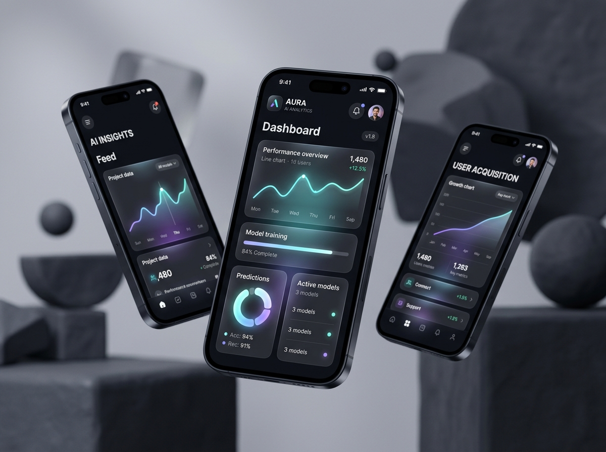
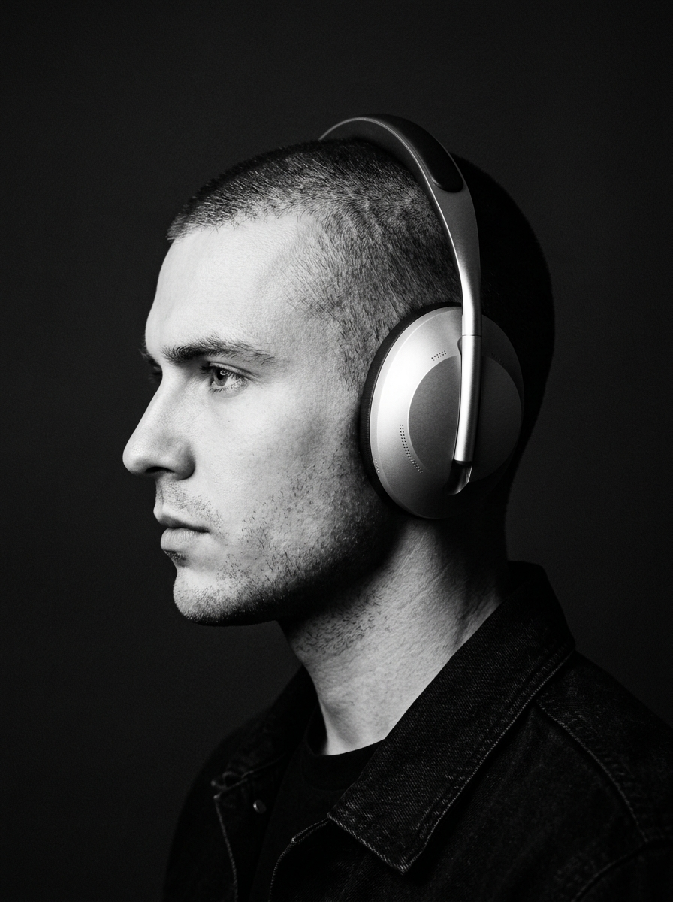
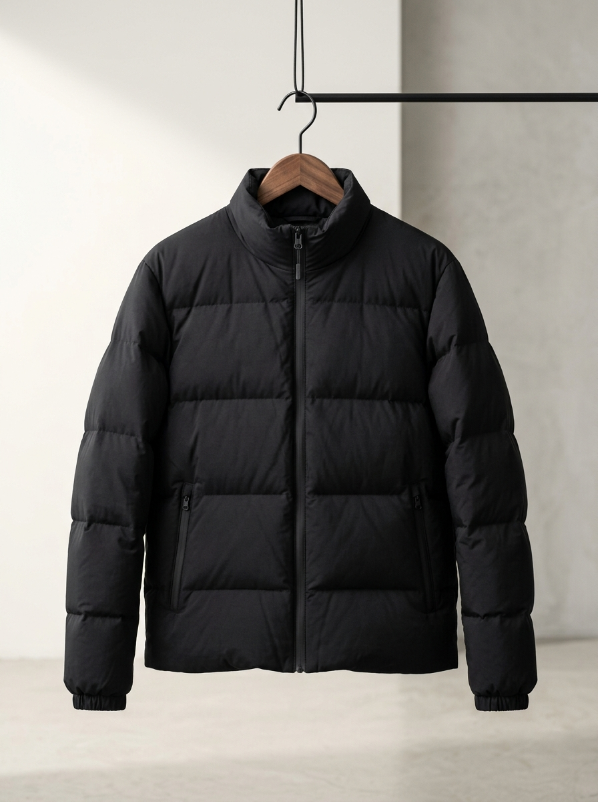

Engineering resilient networks with
intelligent automation & scale.
Enterprise case studies across mission-critical banking infrastructure, machine learning incident prediction, CyberArk PAM security hardening, and high-availability routing topologies.
Featured Technical Case Studies
Real-world production engineering engagements and research achievements.

ML Time-Series Incident Forecasting Model
Designed and trained a predictive machine learning model on historical time-series call/traffic data to forecast mobile and net-banking network incidents ahead of demand spikes, enabling proactive capacity scaling.
High-Availability Banking Network Topology
Multi-site OSPF routing design and VLAN network segmentation supporting 5M+ active users. Formulated structured root-cause analysis workflows cutting network downtime by 30%.
Privileged Access Management & Zero Trust
Enforced strict privileged access management policies and access control lists across distributed banking nodes, conducting access audits to eliminate unauthorized access risk.

End-to-End Latency & Bottleneck Observability
Built KPI-based alerting frameworks and real-time AppDynamics dashboards, reducing incident resolution time by 35% and maintaining 95%+ SLA compliance across high-volume ServiceNow queues.

Jonsson School Dean's Office Infrastructure
Administering campus helpdesk tickets, hardware provisioning, AV infrastructure for high-profile symposiums, and administrative IT operations for faculty and engineering researchers.
Multi-Area OSPF & BGP Enterprise Simulation
Comprehensive lab implementation featuring multi-area OSPF routing, BGP autonomous system peering, Rapid Spanning Tree Protocol (RSTP), dynamic DHCP relay, and NAT overload.
Complete Technical Archive
Chronological index of network engineering deployments and research projects.
| Year | Project / Deployment | Organization | Key Deliverables | Category | Link |
|---|---|---|---|---|---|
| 2025–26 | Jonsson School Systems & AV Infrastructure | UT Dallas | Campus Ticketing, AV Setup, IT Admin | Campus IT | |
| 2024 | ML Network Incident Forecasting Model | HDFC Bank | Time-Series Model, Capacity Planning | Machine Learning | |
| 2023–24 | End-to-End Latency Observability Suite | HDFC Bank | AppDynamics Alerts, ServiceNow 95% SLA | Observability | |
| 2023–24 | Enterprise Banking Core Topology & OSPF | HDFC Bank | Root-Cause Workflows, 30% Downtime Cut | Routing & Core | |
| 2023 | CyberArk Privileged Access Audit & Policy | HDFC Bank | Zero-Trust Enforcement, Security Auditing | Security | |
| 2023 | NOC Real-Time KPI Health Dashboard | HDFC Bank | Monitoring Templates, Packet Loss Tracking | NOC Dashboards |
Engineering Methodologies
Principles applied to guarantee 99.999% network uptime and security.
Proactive Telemetry
Detecting bottlenecks before users experience degradation through AppDynamics threshold alerts, synthetic transactions, and time-series traffic forecasting.
Redundant Architecture
Eliminating single points of failure with multi-area OSPF, dynamic route failover, VLAN segmentation, and rapid spanning tree topologies.
Zero-Trust Access
Enforcing least-privilege administrative access via CyberArk PAM, granular firewall access control lists, and automated credential rotation.